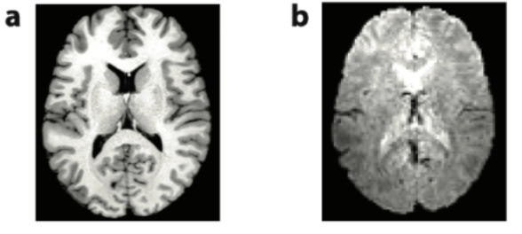
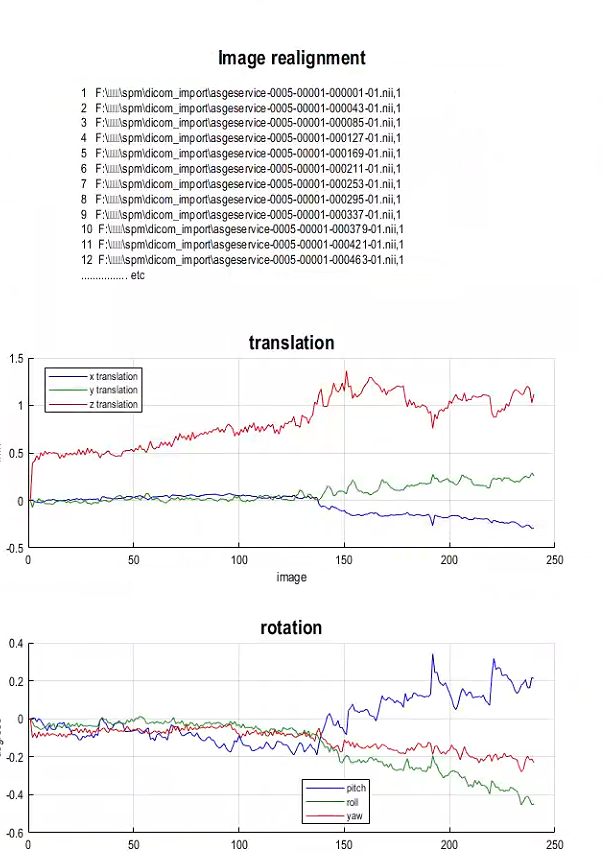

fMRI 预处理
理解 fMRI 预处理
处理目的、数学原理与质量判断
fMRI 预处理需要建立观测之间的时间与空间对应，并控制可能干扰研究结论的变化。每一步都依赖特定假设，也可能改变目标信号。因此，理解预处理既要掌握计算方法，也要明确它解决的问题、适用的条件和仍然存在的局限。
以下从 BOLD 信号与数据结构出发，依次讨论时间校正、空间处理、混杂回归、滤波和质量控制，并通过同一份模拟任务数据说明这些步骤之间的联系。
先明确：处理后要回答什么问题？
任务态：估计任务相关效应
例如，刺激出现后，某个脑区的响应是否改变？事件记录需要与影像对齐，任务预测量还要与运动、漂移等成分共同进入模型。
静息态：研究波动及其共变
例如，两个脑区的自发波动是否相关？共同的运动或生理变化也会制造相关，因此需要检查混杂、目标频段与剩余可用时间。
两类分析都需要可靠的时间与空间对应，但保留哪些变化、怎样建立时间模型，要由研究目标决定。下面的贯穿案例采用任务态数据；每个步骤都要同时追问：它减少了什么干扰，又可能改变什么目标信息？
跟随数据走一遍预处理
反复观察两个对象：脑图中的青色标记位置，以及贯穿案例中的同一条时间序列。空间图是统一几何模型的概念示意；时间小图使用案例数据，纵轴均为任意信号单位。它们展示各步骤的作用，不表示已经模拟了一套完整成像流程。
这里按理解所需的依赖关系排列。去趋势、混杂回归与滤波的小图都从同一裁剪后序列出发，不能理解为前一张输出被机械地送入后一张；实际流程应统一设计，并按算法组合空间变换。
案例：信号升高能否说明任务激活？
假设被试在第 40 秒看到一次刺激，随后某个体素的信号升高。它可能包含任务相关响应，也可能混入头动或缓慢漂移。仅看这条曲线，还不能决定哪个解释成立。
设有一份模拟任务数据：TR=2 s，200 个已保存体积，体积起始时间为 0、2、…、398 s；功能体素边长 3 mm，另有 T1 加权（T1w）结构像与事件记录。T1w 提供较精细的解剖参照，下文简称 T1 图像；公式中的 T₁ 则表示纵向弛豫时间。六次瞬时事件发生在原始时间 40、100、160、220、280、340 s。假设前 4 帧已被判定为非稳态，需要排除。
该序列由已知的任务响应、漂移、运动相关脉冲与扰动叠加而成，便于比较处理结果与目标真值。它用于分析时间处理的作用，不包含完整的空间成像过程。各节中的四点序列与二维坐标用于单独说明相应算法。
先作判断，再看解释：从曲线升高能确定什么？
只能确定观测信号发生了变化。把任务时间对齐、检查运动和漂移、建立任务与混杂模型之后，才能在模型假设下讨论任务相关效应。模拟中可以揭示真值，真实实验通常不能。
BOLD 信号与数据结构
理解预处理，首先要明确 fMRI 的观测对象。扫描仪记录的是磁共振信号随空间位置和时间的变化。神经活动可以通过血流动力学过程影响这一信号，而采样方式与坐标信息决定了我们如何解释每一个观测值。
本章要解决的问题给定一个四维数组和 TR，区分空间轴与时间轴，并算出指定体积的起始时刻。
1.1BOLD：神经活动的间接观测
BOLD 对比源于血液氧合变化对磁共振信号的影响。神经活动经由代谢与血流变化间接改变信号，因此需要从血流动力学和磁共振衰减两个层面理解观测。
BOLD（血氧水平依赖）对比与脱氧血红蛋白有关。典型激活时，局部血流增加通常超过氧消耗增加，脱氧血红蛋白减少，梯度回波 BOLD 信号往往升高。
常用的梯度回波 EPI（回波平面成像）快速采集对 T₂* 敏感的图像。BOLD 包含血管内外效应，不能直接换算为神经放电次数。
算一个例子。TE=30 ms；固定 S₀=100，若 T₂* 从 40 ms 变为 41 ms，信号约由 47.24 变为 48.11，增加约 1.85%。这是固定其他因素的示意计算。
S 为回波信号，TE 为回波时间，S₀ 为尺度因子，T₂* 为有效横向弛豫时间。该式描述简化信号衰减，并不把 BOLD 唯一归因到某一个生理量。
延伸阅读：R1
1.2四维数据：一组体积构成一次 run
理解信号来源后，还需要明确这些观测如何组织。扫描覆盖许多空间位置，并以一定间隔重复采集，形成具有三个空间维度和一个时间维度的数据。
- 体素 voxel：一个三维采样单元。
- 切片 slice：一个空间平面。
- 体积 volume：一次覆盖目标脑区的三维图像。
- run：一次连续扫描产生的体积序列。
算一个例子。64×64×40×200：每个体积 40 层，一共 200 个时间点。若 TR=2 s，名义采集时长为 400 s；首末体积起始时间相隔 398 s。
i、j、k 是空间索引，n 是时间索引。这里假定切片沿第三个空间轴排列；实际切片轴应核对 NIfTI 头信息与 SliceEncodingDirection，不能仅凭维度位置判断。四维 fMRI 的第四维通常是时间。
从 64×64×40×200 的数组中，如何取出一个体素的时间序列？
固定前三个空间索引 i、j、k，让时间索引 n 从 0 到 199 变化，得到 200 个观测值。沿空间轴取值则是在比较不同位置。
延伸阅读：R3
1.3HRF：事件与预期 BOLD 响应
现在固定一个体素，观察它随时间变化的信号。神经活动与 BOLD 之间的间接关系体现为响应的延迟与展宽；血流动力学响应函数（HRF）将事件时刻与预期信号联系起来。
事件序列 u 与血流动力学响应 h 卷积，生成任务预测量 x。卷积同时表达延迟、扩展与重叠。
在线性、时不变的近似下，同样的事件在不同时间触发相同形状的响应。
算一个例子。取 u=[1,0,1]，h=[0,1,0.5]。线性卷积得到 x=[0,1,0.5,1,0.5]：第二次事件贡献一个向后移动两格的 h。
n、k 是离散时间索引；u[k] 是事件幅度，h[n−k] 是事件后相应延迟处的响应。示意核只有三个点，不是真实 HRF。实际 HRF 因脑区、个体和状态变化，叠加也只是近似。
先预测：两次事件靠得更近，响应会不会重叠？
再操作：将间隔从 20 s 改为 0 s。
解释观察结果
在这个线性模型中，重叠由平移后的核相加产生；间隔为零时是两个相同核相加，不代表真实系统在任意刺激强度下都严格线性。
1.4格式转换与坐标信息
数组维度说明数据的组织方式，坐标信息则说明每个值在物理空间中的位置。格式转换需要同时保留信号与这些解释信号所必需的信息。
原始影像与记录
转换并保留元数据
有空间、时间含义的数组
先让每个数值有位置与时刻，后续校正才有依据。
DICOM 可能是单层、多帧或 mosaic。NIfTI 可存三维或四维数据。文件个数不能直接等同于切片数或时间点数。
转换后要检查维度、方向、TR、时间点数与强度缩放，并保留 JSON 元数据中的 SliceTiming、相位编码方向等信息。
算一个例子。在这个例子中，x=2i−90，y=2j−126，z=2k−72，单位为 mm。代入零基索引 (10,20,30)，得到 (−70,−86,−12) mm。矩阵 A 把这三条关系合写在一起。
深入数学：把坐标换算写成仿射矩阵
A 是 4×4 仿射矩阵，前三行编码体素尺寸、方向及原点；末行使平移也能写成矩阵乘法。上标 ᵀ 表示转置，即把横排数字写成列向量。真实图像还可有旋转或斜切。BIDS 是数据组织与元数据规范，dcm2niix 是常用转换工具。
1.5采集元数据与时间记录
除空间坐标外，采集时刻与编码方向也会影响后续计算。这些信息应来自可靠的采集记录，不能仅从图像外观推断。
TR：在这里指连续功能体积的重复采样间隔，单位统一为秒。 SliceTiming：每层相对体积时间原点的采集时刻。 相位编码方向、有效回波间隔与总读出时间：决定畸变解释。 任务 onset：必须与保留数据的时间原点一致。
算一个例子。TR=2 s，四层采集偏移 τ=[0,1,0.5,1.5] s：空间第 2 层并非第二个采集。多带采集时，不同层可共享同一个 τ。
s 是层索引，τₛ 是采集偏移。使用 SliceTiming 时还需检查 SliceEncodingDirection：若带负号，其列表与该空间轴的索引方向相反。TA 在部分工具中指首末层采集时刻之差；TA=TR−TR/N 仅适用于等间隔、无额外间隙的单带示意。
案例分析：给观测找到坐标
输入是 200 个功能体积、T1 与事件记录。核实 TR、维度和方向后，建立体素索引与毫米坐标之间的对应。此时输出仍是观测数据及可靠元数据，尚不能据此确定任务效应。
检查理解：TR=2 s。索引 n=20 的体积起始时刻是多少？
查看参考解释
正确选项：40 s。采用零基索引，t=n·TR=40 s；它是第 21 个体积。明确索引起点可避免一帧误差。
明确数据的空间位置和采集时间后，需要进一步检查时间上的一致性：序列开始时是否已达到稳态，同一体积的各层是否在相同时刻采集。
时间参考与层间时间校正
时间处理涉及两个不同问题：采集初期的信号可能尚未达到稳态，同一体积内的切片也可能具有不同的采集时刻。前者决定哪些观测适合保留，以及如何调整时间原点；后者要求利用已有样本，估计共同参考时刻的信号。
本章要解决的问题删除初始体积后，正确换算事件时刻，并解释层间时间校正与裁剪分别改变了什么。
2.1初始稳态：为什么前几个体积可能异常
采集初期的信号变化可能来自磁化状态尚未稳定。重复射频激发与两次激发之间的恢复共同作用，使纵向磁化逐渐接近动态稳态。
排除或建模初始非稳态体积，有助于减少采集条件变化造成的影响。具体数量应依据扫描设置、非稳态标记和初始信号表现判断，同时确认是否已有未保存的预扫描体积（dummy scans）。
可以先把“尚未稳定的部分”单独记为偏差 d。若每次激发后只保留上一轮偏差的比例 q，那么 q 越接近 1，稳定得越慢。
算一个例子。把与稳态的偏差记为 dₙ。若 E₁cosα=0.5，初始偏差为 16，则后续依次为 8、4、2、1。删除数量取决于可接受偏差与实际数据。
先预测：偏差保留比例 q 从 0.5 增加到 0.8，会更快还是更慢稳定？
再操作：保持初始偏差不变，只改变 q。
解释观察结果
q 更接近 1 时，每次剩余的偏差更多，趋近稳态更慢。删帧数不能脱离采集条件固定。
深入数学：从磁化恢复推到稳态递推
E₁ = exp(−TR/T₁)； Mss = Meq(1−E₁)/(1−E₁ cos α)
Mₙ 表示第 n 次激发前的纵向磁化，Meq 表示平衡磁化，α 为翻转角，T₁ 为纵向弛豫时间。这里 TR 是同一组织两次激发间隔。充分扰相且重复条件稳定时，减去稳态解可得 dₙ₊₁=E₁cosα·dₙ；实际序列仍需单独判断。
2.2裁剪与事件时间对齐
删除初始体积会改变保留序列的时间原点。事件记录、影像与混杂变量必须同步调整，才能继续描述同一时刻的观测。
200 帧，初始波动偏大
按证据排除前 4 帧
196 帧，事件原点同步调整
示例原始 8 s 成为新 0 s；图中保留原始横轴，便于比较同一观测。
如果原始 onset 以第一个已保存体积为零点，删除开头 d 个体积后，需要将事件时间换到新原点。
扫描端未保存的 dummy scans 是否已计入事件日志，应先核实。负 onset 不能机械删除：早期事件的 HRF 可能延续到保留时段。
算一个例子。TR=2 s，删除 4 个已保存体积。原 onset=30 s 对应新 onset=22 s；误用 30 s 会把预测响应整体错开 8 s。
也可在某些模型中保留初始体积并使用非稳态回归量处理。无论采用哪种方法，必须统一数据、事件、混杂文件的行与时间原点。
删除 4 个体积后，只删除影像、不删除混杂文件前 4 行会怎样？
混杂变量与观测不再对应同一时刻，回归会拟合错误的关系。
2.3采样：时间曲线只被观察了有限次
时间原点一致后，还需考虑离散采样的限制。连续信号只在有限时刻被观察，这决定了插值能够估计什么，以及哪些频率可能发生混叠。
同一条连续曲线用不同 TR 采样，会得到不同数量的观测。更短 TR 增加采样信息，但不把血流动力学响应变成神经放电记录。
高于 Nyquist 频率的成分可能折叠到低频，形成混叠。
算一个例子。TR=2 s → fₛ=0.5 Hz、fN=0.25 Hz。0.3 Hz 的正弦在采样后可表现为 0.2 Hz（相位/符号相应变化），所以不能仅凭低频就判定神经来源。
fₛ 是每秒采样次数，fN 是 Nyquist 频率。规则采样下，频率相差整数倍 fₛ 的正弦可能给出相同采样值。心率常在约 1 Hz 量级，呼吸频率随状态变化；混叠与慢变生理调制都会影响 BOLD。
延伸阅读：R7
2.4层间时间校正：统一参考时刻
确定 TR 和各层采集偏移后，可以把同一体积中的实际采样时刻画在一起，观察它们与共同参考时刻的差别。
同一体积，各层采集时刻不同
沿每个体素的时间轴插值
每层估计共同参考时刻的值
改变的是时间参考；接下来还要确认同一位置是否对应同一组织。
层间时间校正（STC）选择参考偏移 τref，将各层序列重建到 n·TR+τref。计算沿每个体素自身的时间序列进行，得到的是目标时刻的估计值。
算一个例子。单带、均匀、连续采集的示意：TR=2 s、50 层，层间间隔 40 ms，首末层相差 49×40=1960 ms，而不是 2000 ms。
是否做 STC 取决于真实层时序、TR、任务时间尺度、信号特征和流水线。短 TR 不等于必须跳过；大头动也不是通过更改两个步骤顺序就能完全解决。
先预测：共同参考时刻对齐后，各层的估计值是否一定相同？
再操作：将参考偏移从 0 调到 1.5 s，比较四层的估计值。
解释观察结果
不一定。本例四层使用同一个连续函数，但采样位置不同，线性插值仍会产生不同误差；真实脑中各层信号本来就可以不同。时间参考一致不等于信号值一致。
2.5插值：用已知值估计未知时刻
层间时间校正需要估计共同参考时刻的信号。线性插值提供了一个直观的起点：根据目标时刻与相邻样本的距离，确定两个样本的权重。
在线性变化假设下，目标时刻越靠近某个样本，该样本的权重越高。权重没有单位，因此输出与输入信号的单位相同；两个权重之和为 1，则保证常数信号经插值后仍保持原值。
从时间间隔推导插值权重
- 0.5 s 位于 0 与 2 s 之间的四分之一处：a=0.5/2=0.25。
- 右端点权重为 0.25，左端点权重为 1−0.25=0.75，两者相加为 1。
- 先取各自贡献：10×0.75=7.5，14×0.25=3.5；相加为 11。
a 没有单位，输出与输入信号单位相同。这种权重是线性变化假设的结果，不能保证任意真实曲线在 0.5 s 恰好等于 11。
a = (t−t₀)/(t₁−t₀)
t₀、t₁ 是相邻已知时刻；a 为相对位置。实际 STC 可使用 sinc 等插值。线性例子用于解释权重，不代表所有软件的实际实现。端点缺乏邻近样本、快速变化和运动都会增加估计误差。
先预测：把目标时刻从 0.5 s 移到 1.5 s，估计值更接近 10 还是 14？
再操作：先心算两个权重，再拖动滑块。
解释观察结果
a 从 0.25 变为 0.75，估计值由 11 变为 13。它仍是基于线性假设的估计。
延伸阅读：R5
案例分析：统一事件与影像的时间原点
原始序列排除前 4 帧后，保留 196 帧，原始起始时间 8 s 对应新的 0 s。六个事件 onset 改为 32、92、152、212、272、332 s。若进行 STC，还要把任务模型的参考时间与图像保持一致。输出改变了时间参考，空间运动仍未解决。
检查理解：原始 onset=100 s，排除 4 帧后应是多少？
查看参考解释
正确选项：92 s。4×2=8 s，故新 onset=100−8=92 s。这个计算以原事件时刻相对第一个已保存体积为前提。
统一时间参考后，还需要保证同一体素在各个时刻对应相同的组织。头部运动会破坏这种空间对应，因此时间校正之后的讨论将转向位置与形状的变化。
头动、重采样与 EPI 畸变
扫描过程中，即使体素索引保持不变，头动也可能使该位置覆盖不同的脑组织。空间处理需要估计图像之间的对应关系，并将信号重采样到共同网格上。整体平移和旋转可以用刚体变换描述，局部拉伸与压缩则需要另行考虑。
本章要解决的问题解释“图像已对齐但信号仍有尖峰”为什么可能发生，并提出下一项检查。
3.1头动与体素的组织对应
运动可以把组织之间的空间差异转化为体素内的时间变化。组织边界附近的部分容积效应，能够直观地说明这一过程。
一个固定体素起初覆盖灰质，稍后可能混入脑脊液。即使神经相关活动不变，观测也会改变。
空间校正把体积对齐到参考；运动相关信号变化还包括自旋历史、运动与磁场相互作用和体积内运动。
算一个例子。灰质信号 100、脑脊液信号 60。灰质占比 p 从 0.8 降到 0.6，观测由 92 变为 84，相差 8，尽管两种组织本身的信号没有变化。
p 是体素内灰质比例。这里用两组织线性混合解释部分容积效应；实际成像和运动伪影更复杂。几何对齐不能保证这些影响全部消失。
3.2刚体变换：三个平移与三个旋转
在形状与大小保持不变的假设下，头部位置的变化可以用平移和旋转描述。刚体变换由此建立两个时刻之间的坐标对应。
相对参考位置发生平移与旋转
估计平移与旋转
估计使位置对应的变换
青色点跟随同一组织移动。变换先给出坐标关系，图像赋值还需要重采样。
三维刚体变换有三个平移参数和三个旋转参数。描述旋转时，需要明确旋转轴、顺序、角度单位和旋转中心。以下二维例子用于说明同样的坐标运算。
算一个例子。r=(1,0)，绕原点逆时针转 90° 得 (0,1)，再平移 d=(2,1)，得到 r′=(2,2)。
先预测：旋转和平移会改变这条单位线段的长度吗？
再操作：先只改变角度，再只改变平移。
解释观察结果
理想刚体变换保持长度。位置和方向可以改变，图像重采样产生的模糊则是另一件事。
深入数学：旋转矩阵为何保持距离
二维旋转与距离保持
写成坐标就是 x′=x cosθ−y sinθ+dₓ，y′=x sinθ+y cosθ+dᵧ。令 θ=90°，cosθ=0、sinθ=1，因此 (1,0) 先变为 (0,1)，再加上 (2,1) 得到 (2,2)。
旋转矩阵 R 满足 RᵀR=I，因此向量旋转前后的长度平方相同：‖Rr‖²=rᵀRᵀRr=rᵀr。平移不会改变两个点的差向量，所以点间距离也保持不变。
二维 R = [[cosθ, −sinθ], [sinθ, cosθ]]
r 为位置向量，R 为旋转矩阵，d 为平移向量。三维可写 R=RzRyRx，但不同软件约定不同。绕中心 c 旋转应写 r′=R(r−c)+c+d，不能忽略中心。
延伸阅读：R5
3.3运动参数的估计
确定变换形式后，还需要从图像中估计参数。算法比较候选变换后的图像与参考图像，寻找使两者最相似的一组参数。
同一序列的体积具有相近图像对比，可通过参考图与移动图的相似性估计运动。
估计参数与重采样是两个不同阶段；软件中的 Estimate / Reslice 正对应这种区别。
算一个例子。假设两种候选位移的残差分别为 [1,−1,0] 和 [3,0,−2]，平方和为 2 与 13；此简化目标下第一种更好。
θ 表示 6 个参数；T 将移动图坐标映射到参考图，T⁻¹ 用于从输出位置反查输入。平方差是一种相似性度量，实际算法还可能采用加权与不同采样策略。目标函数的数值降低，并不保证解剖对应准确。
延伸阅读：R5
3.4空间重采样与插值
变换确定的是坐标关系，输出图像仍需要在目标网格上赋值。当目标位置对应到原始采样点之间时，就需要通过空间插值估计强度。
原始网格上的测量值
反查输入坐标，再插值
目标网格上的插值估计
网格更密不等于细节更多；刚体变换也不能消除局部畸变。
通常从输出网格出发，用逆变换找到它在原图中的位置，再用邻近采样点计算强度。若多个空间变换依次作用，应尽可能先组合坐标映射，再统一重采样，以减少反复插值带来的模糊。网格变密并不增加原始采集中的真实细节。
Iout(rout)=Interpolate[Iin, rin]
算一个例子。在一维输入中，位置 2 的值为 10、位置 3 为 18；反查位置 2.25，线性插值得 0.75×10+0.25×18=12。
T 将输入坐标映射到输出坐标；T⁻¹ 反查输入位置。Interpolate 表示根据附近样本估计强度，离散图像在非整数位置原本没有直接测量值。标签图常用最近邻以免生成新类别；连续影像通常采用线性或更高阶插值。
重采样成更小体素为什么不等于更高真实分辨率？
增加的是输出采样位置，而不是原始测量携带的独立细节。插值会引入相邻输出值之间的依赖。
延伸阅读：R6
3.5EPI 畸变：形状变化不一定来自运动
整体位置对齐后，局部结构仍可能存在拉伸或压缩。这类形变可以由磁场不均匀引起，不能仅通过平移与旋转消除。
局部结构被拉伸或压缩
利用场图等估计局部位移
按位移场校正几何位置
局部校正帮助后续解剖对应；已经脱落的信号不会因此自动恢复。
额底、颞底等空气与组织交界附近容易出现磁敏感相关畸变。场图或反向相位编码数据可用于估计这些局部位移；已经发生的明显信号脱落，通常无法仅靠几何校正恢复。
算一个例子。局部频偏 Δf=20 Hz，相位编码方向每像素带宽为 10 Hz/像素，则位移大小约 2 像素；若该方向体素为 2 mm，则约 4 mm。
Δp 为像素位移，Δf 为离共振频率，BW 为相位编码方向每像素带宽。位移符号取决于相位编码与坐标约定；实际软件常依据总读出时间构建位移场。几何校正仍需检查局部边界和信号覆盖。
先预测：同样频偏下，相位编码方向的带宽加倍，位移会怎样？
再操作：保持频偏 20 Hz，将带宽从 10 调到 20。
解释观察结果
位移由 2 像素降为 1 像素，因为示意关系是频偏除以每像素带宽。真实采集参数选择还受其他条件约束。
案例分析：对齐位置以后，还要检查信号
对功能体积估计刚体运动，得到每帧的 6 个参数；根据可用场图或反向编码数据处理畸变，再按目标网格重采样。输出包括对齐图像和运动记录。案例曲线中的脉冲代表运动相关混杂；空间对齐后，这类信号变化仍可能存在。
对齐之后，为什么还要检查信号？
同一被试的体积外缘在运动校正后对齐了，但第 174 s 附近仍有多个体素同步出现信号尖峰。有人建议再次运行刚体配准；另一人建议先检查该时段的图像、DVARS 与运动记录。你会先做哪一项？说明理由，并指出什么证据会使你改变决定。
对照参考分析与判断要点
优先检查该时段的图像、DVARS、运动和任务记录。几何对齐不能消除全部体积内运动、自旋历史或运动与磁场相互作用，也不能仅凭尖峰就认定其来源。若叠加图仍显示位置估计失败，再考虑改进配准；若几何对应已合理，应依据信号异常及分析目标考虑混杂或异常帧策略。
检查自己的解释是否包含：
- 区分几何位置与信号强度变化。
- 提出能够区分不同原因的检查。
- 说明进一步处理取决于检查结果。
运动与畸变处理改善了功能图像内部的空间对应。在此基础上，还需要将功能信号定位到个体解剖结构，并在群体分析中建立跨被试的共同空间。
配准、组织分割与空间标准化
功能像提供信号的时间变化，结构像提供较精细的解剖信息。两者的配准建立被试内的空间对应；个体结构像到模板的映射则为群体比较提供共同参照。两类问题都涉及图像变换，但相似性标准与允许的形变范围有所不同。
本章要解决的问题区分功能—结构配准、组织分割与标准化的产物，并从边界叠加中找出局部错配。
4.1功能像与结构像的配准
功能像与结构像需要指向同一解剖位置。下面先观察边界对应，再解释为什么不同灰度对比仍然能够配准。
功能像与结构参照尚未对应
匹配解剖边界
同一组织映射到结构像位置
结构像随后提供两类信息：组织掩膜，以及通向模板的空间映射。
例如，两类组织在一幅图中一亮一暗，在另一幅图中明暗相反，只要对应关系稳定，仍然能够提供配准线索。互信息将这种统计依赖量化；边界配准则直接利用组织交界的信息。
先预测：外缘看起来重合，能否推断内部结构也已对齐？
再操作：将偏移从 4 调到 0，分别观察外缘与内部边界；章末再比较局部错配的反例。
解释观察结果
这个纯平移模拟中，偏移归零会让各边界一起对齐。真实图像还可能有局部形变，不能由外缘重合推断内部也正确。章末反例展示了这种区别。
深入数学：互信息怎样衡量灰度间的依赖
算一个例子。若两类组织各占一半，且明暗虽相反却始终一一对应，则两个非零联合概率都是 0.5，各自贡献 0.5×log₂[0.5/(0.5×0.5)]=0.5 bit，总互信息为 1 bit。若四种配对各占 0.25，则每项的对数为 log₂1=0，互信息为 0。
A、B 是对应采样位置上的强度变量，p(a,b) 为联合概率，p(a)、p(b) 为边缘概率；零概率项按极限记为 0。该两类别计算只说明统计依赖，不保证连续灰度图像中的最优配准必然正确。
对照原始笔记中的图像

4.2组织分割与概率图
结构像还可以用于估计灰质、白质与脑脊液的分布。组织分割既支持空间处理，也为后续提取组织相关混杂信号提供依据。
结构像中的强度与位置信息
结合似然与先验
各位置的组织归属概率
分割的主要产物是概率图与掩膜，它们会参与混杂信号提取。
分割模型将强度信息与空间先验结合，估计每个位置属于灰质、白质或脑脊液的概率。偏置场，即缓慢变化的强度不均匀，也可能需要共同估计。
组织归属概率表示分类的不确定性，不能直接当成组织体积分数。后者需要明确的部分容积模型。实际提取混杂信号时，还要检查掩膜是否混入灰质或边界体素。
算一个例子。若两个候选组织得到的相对权重为 0.4 与 0.1，把它们除以总和 0.5，就得到 0.8 与 0.2。概率之和为 1；这些权重的来源可由下面的贝叶斯公式解释。
深入数学：从先验和似然得到后验概率
算一个例子。只考虑灰质和白质，先验均为 0.5。设当前强度对应的似然密度分别为 0.8、0.2，则两类未归一化权重是 0.4、0.1，灰质后验为 0.4/(0.4+0.1)=0.8。若灰质先验改为 0.2、白质为 0.8，同样的似然会得到 0.16/(0.16+0.16)=0.5。
c 为组织类别，I 为强度；P(c) 是先验，p(I|c) 是似然密度，P(c|I) 是后验概率。分母对所有类别求和，使后验之和为 1。真实算法还利用空间信息；白质、脑脊液掩膜中提取的变化也不一定全部来自噪声。
4.3空间标准化：建立群体比较的空间基础
被试内配准建立了功能像与个体解剖的对应。群体分析还需要处理不同个体在脑大小、形状和沟回位置上的差异。
个体解剖与模板仍有形状差异
估计整体与局部形变
建立个体到模板的空间映射
小图仅示意整体缩放；真实标准化还可含局部形变。共同坐标建立后，再选择空间整合尺度。
标准化通常先估计个体 T1 到模板的整体仿射与局部非线性变换，再将相应变换应用到功能图像。报告结果时，需要注明所用模板的具体版本、分辨率及变换方法。
目标 = 图像不匹配程度 + λ·形变复杂度
算一个例子。一维示例 φ(x)=1.1x+2+u(x)，各坐标与位移单位为 mm。若 x=10、u(10)=−1，则 φ(10)=12：整体缩放和平移先给出 13，再由局部位移修正到 12。真实三维形变对各位置分别定义。
A、b 为整体仿射部分，u 为位置相关位移，λ 控制正则化强度。λ 太小可能过拟合，太大可能对齐不足。标准化不保证跨人细胞级或功能级同源。
4.4非线性形变的约束
局部形变增加了配准的灵活性，也增加了产生不合理对应的可能。除图像相似性外，标准化算法还需要约束形变的幅度、平滑程度或拓扑性质。
对位移场的梯度施加惩罚，是约束局部变化的一种方式；其他方法也可通过参数化方式保持变换的可逆性。需要区分“位移大”和“相邻位置的位移变化快”：前者未必意味着形变不平滑。
标准化既要让图像匹配，又要限制不合理形变。下面的目标函数与 Jacobian 解释了如何把这两个要求量化。
深入数学：展开公式、推导与符号解释
梯度约束与局部体积变化
在一维等间距网格上，可以用 Σ(uᵢ₊₁−uᵢ)² 近似梯度惩罚。位移 [0,1,2] 的惩罚为 1²+1²=2，[0,0,2] 为 0²+2²=4；后者的变化更集中。常数位移 [2,2,2] 的惩罚为 0，因为它只代表整体平移。
Jacobian 矩阵 J 包含变换对各坐标的偏导数，det(J) 给出局部有向体积比。对保持方向的变换，0<det(J)<1 表示压缩，det(J)>1 表示扩张；局部折叠或奇异位置需进一步检查。解释前必须明确变换方向。
算一个例子。一维 φ(x)=1.2x，导数为 1.2，表示局部长度扩展 20%；三维各轴均扩大 1.2 倍时，体积比例为 1.2³=1.728。
D 表示图像差异，λ 控制约束强度，∇u 表示位移在空间上的变化率，积分将整个区域的惩罚累加。该梯度项只是一个示例，不代表所有标准化算法的具体实现。
延伸阅读：R12
案例分析：把功能信号放回解剖位置
借助 T1 建立功能像与个体解剖的对应；需要群体空间时，再估计个体到明确模板的形变。组织概率图为后续白质、脑脊液信号提取提供掩膜。输出是变换、掩膜及目标空间图像，仍需检查局部边界。
外缘重合，是否就足够？
下方哪一个结果更值得优先复查？请指出图中的具体证据，说明该结果不能仅靠“整体轮廓相似”通过检查，并指出目前缺少哪一类证据。
结果 A
结果 B
对照参考分析与判断要点
结果 B 应优先复查：外缘虽重合，内部灰色结构与蓝色参照仍明显错开。整体轮廓可以掩盖局部错配。结果 A 仅在这个示意平面上对应较好，仍需检查其他平面、局部区域、覆盖范围及原始图像；不能从单张图推断完整三维质量。
检查自己的解释是否包含：
- 指出内部边界的对应情况。
- 区分整体轮廓与局部对应。
- 说明单个平面不能证明整个三维配准成功。
共同坐标有助于比较不同个体，却不能消除全部解剖与功能差异。接下来需要考虑分析的空间尺度，以及是否合并邻近体素的信息。
空间平滑与信噪比
是否进行空间平滑，取决于研究所关注的空间尺度。检测连续区域的共同变化与区分相邻位置的精细差异，对信息整合的要求不同。高斯平滑通过距离加权合并邻近体素，其降噪效果与定位精度的变化都来自这一操作。
本章要解决的问题根据研究的空间尺度，解释平滑如何同时带来降噪收益与区域混合风险。
5.1空间平滑：在同一时刻混合邻近体素
空间平滑将单个位置的信号替换为邻近位置的加权组合。权重随距离变化，从而决定哪些体素参与计算，以及各自贡献多少。
放大标记位置及其邻近体素
同一时刻，邻近位置加权
邻域加权后的空间分布
两图共用色阶，中心由 10 降至约 1.59，变化分布到邻域。此图只看空间；下一步固定位置，转向时间变化。
平滑可能提高对空间连续信号的检测能力，也会降低定位精度并混合相邻组织。
空间平滑与时间平滑是不同操作。平滑不能作为去除瞬时尖峰的可靠替代。
算一个例子。三个相邻体素 [10,14,10]，权重 [0.25,0.5,0.25]，中心输出为 12。若 FWHM=6 mm，则 σ≈2.55 mm；3 mm 体素下 σ≈0.85 体素。
w(d) ∝ exp(−‖d‖²/(2σ²))； FWHM≈2.355σ
核宽必须与当前网格使用一致单位；实际三维核、边缘处理和掩膜也会影响结果。
先预测：核变宽后，设定信号区域的边缘会变得更锐利吗？
再操作：从 σ=0 缓慢增加到 3。
解释观察结果
边缘会更模糊、附近位置被混合。扰动变小与定位精度降低可以同时发生。
深入数学：推导 FWHM 与 σ 的关系
为什么高斯核的 FWHM 约为 2.355σ？
峰值在距离 0 处。令距离 x 处的权重降到峰值的一半：exp(−x²/2σ²)=1/2。两边取自然对数，得到 x²=2σ²ln2，因此两侧半高位置是 ±σ√(2ln2)。它们之间的全宽为 2σ√(2ln2)≈2.355σ。
σ 和 FWHM 必须使用相同长度单位。如果 σ 用毫米，计算出的 FWHM 也用毫米；换成体素单位时，必须依据当前网格尺寸。
r 为输出位置，q 为邻域位置，d 为距离，σ 为高斯核宽度。FWHM 是峰值一半处的全宽，来自 exp(−x²/2σ²)=1/2 的两侧解。实际三维核、脑边缘处理与掩膜也会影响结果。
延伸阅读：R5
5.2平滑的收益取决于信号与噪声结构
平均能否提高信噪比，取决于信号与噪声在空间上的相关结构。邻近信号较一致、噪声较独立时，局部平均更有利于保留共同信号并减小噪声波动。
局部平均往往使孤立峰值降低、边界变宽，但对核范围内一致的信号可以保持原值。多体素模式、高分辨率定位与 ROI（感兴趣区）边界分析，对这种空间混合尤其敏感。
算一个例子。若三个噪声独立且方差均为 v，权重 [0.25,0.5,0.25]，输出方差为 0.375v；噪声标准差约为原来的 0.612。若噪声完全相同，则方差仍为 v。
当真实信号在核覆盖范围内较一致时，归一化平均能够保留其共同成分；如果信号仅集中在少数体素，它也会被稀释。平滑对信号分布及统计推断的影响，需要结合空间相关性与分析模型判断。
深入数学：用协方差解释噪声平均
把 [10,500,10] 平均后中心下降，是否证明异常已消除？
不证明。异常被分散到邻近位置，且平均后仍很高。应辨认异常来源并使用相应质量控制与处理。
延伸阅读：R5
案例分析：平滑核与体素的单位要一致
若分析目的支持采用 6 mm FWHM 的核，且当前输出网格仍为 3 mm，则 σ≈6/2.355≈2.55 mm，即约 0.85 个体素。若输出网格已改变，必须重新换算。输出混合了邻近空间信号，核大小应由目标尺度决定；6 mm 仅用于说明单位换算，并非通用设置。
更高的 tSNR 是否足以决定核宽？
研究希望区分两个间距约 4 mm 的邻近小区域。在同一数据上，12 mm FWHM 平滑比 6 mm 得到更高的 tSNR。方案甲据此选择 12 mm；方案乙先比较两个区域的信号混合与边界，再决定核宽。你赞成哪种判断过程？是否已有足够证据确定 6 mm 合适？
对照参考分析与判断要点
方案乙的判断过程更合理。tSNR 上升只反映均值与时间标准差的比值变化，不能证明区域区分能力得到保留。两个核都可能混合相邻区域，目前也不能认定 6 mm 合适。还应结合体素尺寸、实际空间分辨率、区域形状及平滑前后结果，比较更小核或不平滑的适用性。
检查自己的解释是否包含：
- 同时考虑噪声降低与目标信号混合。
- 把判断联系到区分邻近区域的研究目的。
- 不把两种候选中较小的核自动当成正确答案。
空间平滑整合的是同一时刻、不同位置的信号。固定一个位置后，其时间序列仍可能包含漂移、运动和生理波动，需要进一步通过时间模型加以处理。
混杂回归与最小二乘
混杂回归首先估计混杂变量与 BOLD 信号之间的关系，再从观测中减去模型解释的部分。由于两者的单位与幅度通常不同，不能直接相减。模型包含哪些变量、系数如何估计，共同决定了哪些变化被移除。
本章要解决的问题用小例子区分观测、拟合与残差，并说明为什么去混杂也可能改变任务效应。
6.1最小二乘：寻找最能解释数据的系数
从一个混杂变量出发，可以将观测表示为基线、与混杂有关的变化以及剩余误差。最小二乘通过最小化误差平方和，估计其中未知的系数。
截距描述基线，斜率描述混杂变量每变化一个单位时，预测信号改变多少。下面共同估计这两个量，再检查留下的误差。
先用四个观测完成一次最小二乘，再把相同方法推广到多个解释变量。
从四个点推到最小二乘
观测 y=[9,9,11,15]，混杂 c=[−1,0,0,1]。用 ŷ=a+bc 预测各个观测，待估参数为截距 a 与斜率 b。
- 先定义误差。eᵢ=yᵢ−(a+bcᵢ)。正负误差会抵消，所以最小化平方和 SSE=Σeᵢ²。
- 确定截距。对 a 求导得到 Σ(yᵢ−a−bcᵢ)=0。因为 c 的均值为 0，所以 a=y 的均值=11。
- 把斜率留下。残差变成 [b−2,−2,0,4−b]，所以 SSE=(b−2)²+4+(4−b)²=6+2(b−3)²。
- 找最低点。平方项最小为 0，因此 b=3，SSE=6。也可求导：dSSE/db=4(b−3)=0。
- 回到数据。预测为 [8,11,11,14]，残差为 [1,−2,0,1]。这些残差是模型未解释的部分。
输入 y 的单位是信号单位，b 的单位是“信号单位/混杂变量单位”，SSE 的单位是信号单位的平方。多个解释变量可以统一写入设计矩阵，用同样的最小二乘准则估计系数。
深入数学：从单变量推到矩阵形式
满列秩时：β̂=(XᵀX)−1Xᵀy
y 为 T×1 观测，X 为 T×p 设计矩阵，β 为 p×1 系数。对平方误差求导：−2Xᵀ(y−Xβ)=0，得到正规方程。数值实现通常采用 QR/SVD 而不是显式求逆；秩不足需处理冗余或使用广义逆。
先预测：把斜率从 3 改为 2，误差平方和会增加多少？
再操作：先看上面的四点计算，再尝试滑块。
解释观察结果
SSE=6+2(b−3)²，所以从 b=3 改为 b=2，SSE 从 6 增为 8。
延伸阅读：R2
6.2去趋势：把缓慢变化放入模型
线性去趋势可以直接写成回归模型：将时间作为预测量，估计随时间变化的斜率，再移除相应的拟合成分。
裁剪后的同一条观测序列
用时间列拟合慢变
移除拟合的截距与线性趋势
曲线更平稳仍可能含运动影响；趋势也可与目标信号重合。
仪器漂移、生理变化和其他因素可能产生慢变分量，并不一定都是线性的。
去趋势会移除所有与该趋势基函数重合的成分，包括可能的目标信号。
算一个例子。t=[0,1,2,3]、y=[10,12,14,16] 时，拟合 a=10、b=2，残差为 0。再加入 v=[1,−1,−1,1]：因为 Σv=0 且 t·v=0，重新拟合仍得到同一条直线，残差恰为 v。一般波动只保留与截距、趋势都正交的部分。
若只去斜率而保留均值，输出与去掉完整拟合值不同，应明确约定。高通滤波可能已经包含漂移基函数；避免不加说明地重复去趋势与高通。疲劳产生的变化也可能包含真实生理/神经过程。
6.3混杂回归：残差是一种投影
多个混杂变量可以共同构成设计矩阵。矩阵形式将最小二乘推广到多变量情形，投影的观点则说明了模型解释部分与残差之间的关系。
观测序列及混杂预测量
共同拟合选定混杂列
模型无法解释的残差
此处示例仅纳入截距、趋势与运动脉冲；任务效应的联合模型将在任务态部分讨论。
残差就是观测减去模型拟合的部分。它仍可能包含目标信号、遗漏的混杂和其他误差，因此不能仅凭曲线更平稳就认定去噪成功。
投影式把“拟合后相减”写成一个算子，并说明为什么残差与已纳入的模型列正交。
深入数学：展开公式、推导与符号解释
列空间是模型各列的所有线性组合所构成的集合。最小二乘把观测分成其中的拟合部分与垂直于它的残差。这里的“垂直”指点积为零，而不是图上两条曲线的夹角。
e=(I−PX)y； Xᵀe=0
算一个例子。前面最小二乘例子中的残差 [1,−2,0,1]，总和为 0；与 c=[−1,0,0,1] 的点积也为 0。这就是对截距与 c 的正交。
这里假定 X 满列秩；秩不足时可写 Pₓ=XX⁺，X⁺ 为 Moore–Penrose 广义逆。I 是单位矩阵。该正交性质针对普通最小二乘；加权拟合需使用相应内积。与模型列共同变化的目标成分也可能被移除，遗漏的混杂仍可留下。
6.4运动回归量：6、12 与 24 列模型
空间对齐得到的六个刚体参数可以作为混杂回归量。进一步加入差分、滞后或平方项，会扩展统计模型，但不会改变刚体变换本身的自由度。
这些扩展项试图描述位置变化、延迟影响与非线性关联。具体列的构造应以所用模型为准，不能仅凭“24 列”推断其定义。增加回归量也会消耗自由度，效果需要结合残余混杂与目标信号保留情况评价。
对应 24 列：[mₜ, Δmₜ, mₜ², (Δmₜ)²]
Δmₜ=mₜ−mₜ₋₁，每组 6 列
算一个例子。单一平移序列 m=[0,1,1] mm，差分可按首帧设 0 得 [0,1,0]；平方列分别为 [0,1,1] 与 [0,1,0]。其他五个参数同样扩展。
另一常见 Friston-24 表述使用当前参数、前一帧参数及两者平方；它与“导数加平方”的构造不能不加说明地视为完全相同。平方是逐元素平方，不是二阶导数。核对实际软件输出、首帧处理、旋转单位与列定义。
6.5组织信号与 CompCor
白质与脑脊液中的时间变化也能提供混杂信息。当多个体素具有共同波动时，可以用少量主成分概括这些变化。
CompCor 通过主成分分析（PCA）寻找能概括最多变异的共同时间变化。解剖 CompCor（aCompCor）通常从白质、脑脊液等掩膜提取成分；时间 CompCor（tCompCor）依据时间变化特征选择体素，两者的选区依据不同。
先看两条完全成比例的序列，再理解奇异值分解如何概括更多体素。
深入数学：展开公式、推导与符号解释
一个共同波动如何概括两个体素
两列为 v=[1,−1,1,−1]ᵀ 与 2v。它们只沿同一时间方向变化，归一化后 u=v/‖v‖=[0.5,−0.5,0.5,−0.5]ᵀ。于是 Z=u[2,4]，一个时间回归量 u 就能重建两列。
总平方和为 ‖v‖²+‖2v‖²=4+16=20，唯一非零奇异值是 √20，因此第一成分解释 20/20=100% 的变异。一般情况下，PCA 依次寻找能解释最多剩余变异、并与已有方向正交的成分；回归量乘一个非零常数不改变它所张成的空间。
Z 是已按列中心化的时间×体素矩阵。U 的列为单位长度的时间方向，Σ 的对角元素为奇异值，V 为体素载荷。第 j 个成分的解释变异比例为 σⱼ²/Σₖσₖ²。是否标准化、保留多少成分及掩膜如何构建，都需要明确；解释变异大不等于纯噪声。
延伸阅读：R15
案例分析：把任务与混杂同时写进模型
保留的 196 帧构成 y 的 196 行；任务预测量、混杂列和事件时间必须与这些行一致。任务效应估计可使用 y=Xtaskβ+Cγ+ε 的共同模型。去混杂后更平稳，并不证明已保留全部任务信号。
两步处理何时能与联合模型一致？
任务预测量 x 与某个运动变量 c 部分相关，但并不完全共线。方案甲先从 y 回归掉 c，再用原始 x 拟合残差；方案乙将任务、运动和截距共同拟合。你选择哪一种来估计任务系数？如果必须分两步完成，需要怎样修改方案甲？
对照参考分析与判断要点
优先采用方案乙。方案甲只改变 y，没有同步改变任务预测量，通常不等价于联合拟合。普通最小二乘条件下，可对 y 和 x 都按同一混杂空间残差化，再拟合二者；截距、样本行及其他模型条件须一致，残差化后的任务列还须可估计。若高度相关，系数仍可能不稳定；完全共线时更不能靠这种改写分离效应。第九章给出三个点的计算。
检查自己的解释是否包含：
- 说明任务与混杂存在重合成分。
- 区分“只处理 y”与“一致处理 y 和 x”。
- 给出等价结论成立的条件，而不保证能解决所有相关性问题。
回归依据预测量与观测之间的关系解释信号，滤波则按频率调整信号成分。两者可能作用于重叠的变化，因此需要同时考虑其数学关系与执行顺序。
时间滤波及其与回归的关系
时间序列可以表示为不同频率成分的叠加。高通、低通与带通滤波分别对这些成分赋予不同权重，但频率本身并不能区分神经活动与噪声。研究目标决定需要保留的时间尺度，TR 与扫描时长则限制了可辨认的频率范围。
本章要解决的问题将频率换成时间尺度，并判断数据与混杂变量的滤波是否保持一致。
7.1时间滤波：按变化速度调整信号
频率表示单位时间内完成的循环次数，周期则表示完成一次循环所需的时间。时间滤波按照频率对信号成分施加不同权重。
同一裁剪后序列的变化
示意：理想高通 0.01 Hz
按频率调整后的变化
本图按 DFT 频率格截断，仅作机制示意。回归、滤波和异常帧需共同设计。
高通抑制慢变，低通抑制快变，带通保留指定频段。频段不是神经与噪声的天然分界。
任务态需保护任务预测量的频谱；静息态频段取决于研究问题、TR、时长与分析方法。
算一个例子。0.005 Hz 对应 200 s 周期；0.05 Hz 对应 20 s。高通截止 0.01 Hz 旨在抑制前者、保留后者，实际滤波存在过渡带。
Aₖ 为幅度，fₖ 为频率，φₖ 为相位。静息态 0.01–0.08 Hz 是一种常见选择，不是通用标准；更低频研究需相应长的扫描。任务态常在 GLM 中处理低频漂移，不能直接照搬静息态带通。
先预测：把高通截止从 0.01 调到 0.06 Hz，会损失哪一条波？
再操作：注意 0.005、0.05 和 0.15 Hz 三个分量。
解释观察结果
原先保留的 0.05 Hz 分量也会被移除。去掉的频率是否有用，需要研究目标来判断。
7.2傅里叶变换：每个频率需要多少权重
离散傅里叶变换为有限长度序列提供了频率分解。扫描总时长决定频率网格间隔，采样间隔则决定可区分频率的上限。
滤波可在频域通过频率响应 H 调整各成分，再变换回时间域。时域滤波与频域描述可以对应。
有限时长决定频率网格；边界、窗函数与滤波实现影响结果。
傅里叶系数说明每个振荡成分需要多大的权重与什么相位；逆变换则把这些成分重新相加。
深入数学：展开公式、推导与符号解释
四点序列的频率分解
令 y=[1,0,−1,0]，N=4、TR=1 s。这恰好是四个采样点上的一周期余弦，频率为 1/(4×1)=0.25 Hz。
按本节 DFT 约定，Y[0]=0、Y[1]=2、Y[2]=0、Y[3]=2。k=1 与 k=3 是实信号中互为共轭的正、负频率配对，不能把它们解释成两个独立的生理振荡。逆变换除以 N 后恢复原序列。
由此可见，分解得到的是一组基函数的系数。真实序列频率不正好落在网格上时，还会出现谱泄漏。
复指数是简写：exp(iθ)=cosθ+i sinθ，i²=−1；实信号中的共轭配对使重建后的虚部抵消。H[k] 是滤波器对第 k 个成分的乘数，可以改变振幅，也可能改变相位。
y[n]=(1/N)Σk=0…N−1Y[k] exp(i2πkn/N)
Yout[k]=H[k]Y[k]； Δf=1/(N·TR)
算一个例子。N=200、TR=2 s，频率间隔为 0.0025 Hz。0.005 Hz 在 400 s 内只有 2 个周期，估计这种慢变化的可靠性仍有限。
对 k≤N/2，可用 fₖ=k/(N·TR) 表示非负频率；k>N/2 则通常写为负频率 (k−N)/(N·TR)。偶数 N 的 Nyquist 点单独出现。复数系数同时编码振幅与相位；频率网格间隔不等于实际估计精度。矩形截断可能振铃，实际高通也可用离散余弦变换（DCT）基函数回归实现。
7.3相位平移：时间校正的另一种理解
有了傅里叶分解，就可以回到第 2 章的层间时间校正：若要估计另一时刻的信号，各频率成分应怎样变化？时间平移对应相位变化，而不是把各成分的振幅统一增大或减小。
同一条波形向前或向后移动，峰谷出现的时刻就会改变。频域表达为各成分按其频率改变相位；幅度不必随之改变。这个关系进一步解释了第二章的时间重建。
Δ 与相位变化的符号由这里的 f(t+Δ) 约定决定；实现时必须明确所用时间方向。
深入数学：展开公式、推导与符号解释
设重建信号 g(t)=f(t+Δ)，即在时刻 t 取原信号更晚 Δ 的值。将积分变量换为 τ=t+Δ 后，傅里叶核中的 exp(−i2πνt) 变为 exp(−i2πντ)·exp(i2πνΔ)，因此得到下面的相位因子。
算一个例子。频率 ν=0.1 Hz，目标偏移 Δ=0.5 s，则相位变化为 2π×0.1×0.5=0.1π rad=18°。不同频率需要不同相位变化。
ν 是频率（Hz），Δ 是时间偏移（s），F、G 为变换后的复数谱，i²=−1。有限序列实现还涉及周期延拓、边界和插值假设。时间域和频域描述的是同一个重建目标。
STC 能恢复 TR=2 s 时没有观测到的任意快速神经变化吗？
不能。校正依赖有限样本和重建假设，不能突破采样与血流动力学本身的限制。
延伸阅读：R5
7.4滤波与回归的执行顺序
滤波与回归都会改变时间序列，但两种操作通常不能交换。一个简单的矩阵例子可以说明：改变执行顺序，可能改变输出及其与混杂变量的关系。
回归后，残差与已纳入的模型列正交；后续滤波会再次改变它，原有关系未必保持。反过来，如果只滤波影像而不相应处理混杂列，回归也可能重新引入已被抑制的频率。
因此，应联合设计滤波与回归，或在适用条件下对数据和模型列作一致处理。章末将比较两种具体方案。
深入数学：用两个投影说明顺序为何重要
算一个例子。二维教学例：y=(1,0)，X=(1,1)ᵀ，R=[[0.5,−0.5],[−0.5,0.5]]，F=diag(1,0)。FRy=(0.5,0)，RFy=(0.5,−0.5)。
此处 F 是简单投影，仅用于证明不交换，不模拟真实带通。FRy 与 X 点积为 0.5，说明后续操作重新引入与原混杂方向的重合。滤波、回归、异常帧处理应作为统一流程设计。
延伸阅读：R13
案例分析：保护目标时间尺度
本案例事件每隔 60 s 出现一次，任务预测量的频谱还受 HRF、有限时长等影响。滤波应与任务模型一致，不能直接照搬静息态频段。如果研究目标换成 0.005 Hz 波动，0.01 Hz 高通就可能衰减目标。
相同截止频率，处理方式就相同吗？
两套静息态方案都计划保留 0.02–0.08 Hz。甲先滤波影像序列 y，再回归未经滤波的混杂列 C；乙用一致的滤波处理 y 和 C，再拟合。哪一种更符合频率一致性的要求？选择之后，还需要检查哪两类条件？
对照参考分析与判断要点
在适用的线性模型条件下，乙更符合一致处理的原则。甲的混杂预测中可能仍有被影像滤波抑制的频率，相减后反而重新引入这些成分。但乙也不自动保证结果可靠：仍需核对频段与研究目标、TR 和时长是否匹配，以及边界效应、异常帧和残余混杂。具体等价关系取决于滤波算子与模型，不能只看名义截止频率。
检查自己的解释是否包含：
- 说明混杂列也具有自己的频率成分。
- 指出不一致处理可能重新引入已抑制的成分。
- 继续核对目标频段、时间结构或异常帧处理。
数学定义明确，并不意味着处理结果必然可靠。还需要结合运动参数、信号变化和有效数据量，检查混杂是否得到控制，以及目标信号是否受到不必要的损失。
质量控制与异常帧处理
质量控制贯穿数据处理的各个阶段。运动参数描述位置变化，信号指标描述强度变化，图像叠加帮助判断解剖对应。将这些证据结合起来，才能识别单一指标无法揭示的问题。
本章要解决的问题结合运动、信号变化和模型秩，说明异常帧处理的依据与信息代价。
8.1FD 与 DVARS：分别观察运动与信号变化
相邻帧之间的位置变化与信号变化需要分别观察。FD 概括运动参数的变化，DVARS 则概括体素信号的变化，两者提供互补信息。
它们可能同时升高，也可能不一致。两项指标都需要先计算相邻帧差分，首帧因此需要单独约定；应结合原始图像和参数定义判断原因，阈值也需与计算方式、单位和数据条件匹配。
FD 与 DVARS 的计算过程
FD 先对各方向相邻帧变化取绝对值，再相加。平移贡献是 0.1+0.2+0=0.3 mm；转动先换为弧长 50 mm×0.001 rad=0.05 mm，总和为 0.35 mm。
DVARS 先求每个体素的相邻帧信号差，再平方、跨体素平均、开根号。两个差值为 3、4 时，得到 √[(9+16)/2]=√12.5≈3.54。它描述信号突变，不能仅凭数值就确定变化的原因。
DVARSₜ=√[Σv=1…V(yᵥ,ₜ−yᵥ,ₜ₋₁)² / V]
d 是平移，θ 是旋转且必须为弧度，r 是近似头半径。不同 FD 定义不可直接混用。原始 DVARS 具有信号单位，标准化 DVARS 定义不同。首帧没有前一帧，需说明约定。
先预测：旋转只有 0.001 rad，为什么仍对毫米单位的 FD 有贡献？
再操作：固定角度，改变近似头半径。
解释观察结果
用 r·Δθ 把小角度变化换成近似弧长。头半径越大，同样旋转对应的弧长越大。

先观察，再下判断：寻找缓慢漂移与相邻帧突然变化的位置。上图的三条平移曲线和下图的旋转曲线是参数序列，本身并不是 FD；还需要按工具约定取相邻帧差分、统一旋转单位并组合。
8.2异常帧的处理与自由度
异常帧的识别与处理是两个不同环节。排除、尖峰回归与插值对时间结构和统计模型的影响不同，需要与后续分析共同设计。
在原始时刻标记可疑观测
示例排除 3 个被标记帧
保留时间间隙，而非拼接时间
橙色带仅标出示例帧，不代表通用阈值；排除、尖峰回归与插值需要分别考虑。
可将异常帧排除或增加单帧指示回归量；具体选择必须与后续模型和滤波相容。
直接把删帧后的序列当连续等间隔数据，会改变频谱和时序含义。插值出的值也不是新的独立观测。
普通回归残差自由度 = T−rank(X)
算一个例子。200 帧，设计矩阵实际秩为 30，普通回归残差自由度为 170。再加 20 个与原列独立的尖峰回归量，变为 150。
深入数学：排除与尖峰回归何时等价
在普通最小二乘、同一组其他回归量、每个被排除帧各设一个独立指示列的条件下，尖峰回归对其余系数的估计等价于仅用保留行拟合；被标记行的残差为 0。零残差不能当作真实观测继续计算相关或滤波。加入时间相关加权、滤波等操作后，不能直接沿用该等价关系。T−rank(X) 也不是所有推断的有效样本量。
8.3质量控制：每一阶段都要留下证据
质量控制还需要覆盖输入信息、空间对应及群体层面的系统差异。某个指标改善，只能支持相应层面的判断。
图像、时间序列与处理记录
汇总多层面的检查
支持保留、返工或排除的证据
质量控制贯穿全程；最终方案还需回到任务态或静息态的研究目标。
输入阶段核对方向、覆盖、维度与采集记录；空间处理后查看边界叠加和组织掩膜；时间处理后结合 FD、DVARS、频谱与残差检查异常。Carpet plot 将许多体素的时间序列按行排列，以颜色表示强度变化，便于发现跨体素同步的条纹或突变。
群体层面还需比较排除比例、保留时长，以及运动与组别或行为指标的关系。不能用总体平均指标掩盖少数个体的严重问题。
算一个例子。某体素均值 100、标准差 5，tSNR=20；把曲线过度平滑到标准差 2，会得到 50，却可能丢失目标变化。
tSNR 需注明处理阶段与计算约定。去均值残差不适合直接用同一 tSNR 解释。不要单靠 tSNR 上升评价处理成功，也不要只根据结果显著与否选择预处理。
案例分析：计算还剩多少可用信息
对每帧检查 FD 与 DVARS，并检查配准、组织掩膜和信号覆盖。若 196 帧的完整设计矩阵实际秩为 20，则普通最小二乘残差自由度为 176；再加入 10 个独立尖峰列，变为 166。时间自相关还会影响推断中的有效信息量。
检查理解：196 帧、模型秩 20，普通回归残差自由度是多少？
查看参考解释
正确选项：176。196−20=176。这里使用的是实际秩，而非不加检查地数列数，也不是所有推断的有效样本量。
质量检查提供了评价处理结果的依据，但具体方案仍需服从研究目标。任务态通常关注任务效应的估计，静息态则常关注自发波动及区域间共变，两者需要保留的信息并不完全相同。
面向研究问题的处理流程
完整流程需要把采集条件、目标效应与质量证据联系起来。任务态和静息态可以共享部分空间处理步骤，但在混杂建模、滤波与异常帧处理上，应根据分析目标作出选择。
本章要解决的问题为一份新数据提出处理选择，并给出相应的质量检查证据。
9.1任务态：保护任务效应的可估计性
任务态分析通常关注任务预测量的系数及其对比。混杂处理必须与任务模型一致，尤其要检查任务与运动共同变化时的可识别性。
事件与 HRF 卷积形成任务列；加入混杂与漂移列，估计任务系数及对比。
若任务与运动高度相关，单靠预处理无法可靠区分其来源。
任务与混杂共同进入模型，才能在控制混杂的条件下估计任务效应。下面用三个点说明：如果分两步做，必须同时调整观测与任务预测量。
深入数学：展开公式、推导与符号解释
为什么不能只处理观测 y？
用三个已中心化的点：任务列 x=[1,0,−1]ᵀ，混杂列 c=[1,−1,0]ᵀ，观测 y=2x+3c=[5,−3,−2]ᵀ。联合拟合可还原任务系数 2、混杂系数 3。
只对 y 去混杂：cᵀy/(cᵀc)=8/2=4，得到 RCy=[1,1,−2]ᵀ。随后用原始 x 拟合，系数为 xᵀRCy/(xᵀx)=3/2=1.5，偏离了 2。
同时对 x 去混杂，得到 RCx=[0.5,0.5,−1]ᵀ。此时系数为 (RCx)ᵀRCy/‖RCx‖²=3/1.5=2，与联合拟合一致。这里的向量已去均值，所以截距不再显式列出。
在普通最小二乘条件下：β̂=(XᵀRCX)−1XᵀRCy
算一个例子。若每次按键都会点头，任务预测量与运动列可能高度相似。增加运动回归量后任务效应不稳定，反映可识别性不足，不能简单解释成“软件把激活删了”。
此式中 X 为任务矩阵，RC=I−PC，C 包含截距和混杂列；逆矩阵要求残差化后的任务列仍线性独立。先去混杂再拟合任务时，应对 y 和 X 一致残差化。fMRI 误差常有时间自相关，实际推断还需预白化等处理。GLM 此处指一般线性模型。
9.2静息态：信号保留与相关结构
静息态分析常关注自发波动及其区域间共变。保留或移除共同信号成分，会直接影响相关结构与连接估计。
头动、呼吸和共同漂移可能制造区域间相关。组织回归、异常帧处理、滤波与全局信号策略均会影响结果。
评价方案时同时看残余混杂、信号保留、可靠性和自由度。
算一个例子。四点示例 x=[1,−1,−1,1]、y=[1,1,−1,−1] 均值为 0，点积为 0，因此 r=0。给二者都加上 2c，其中 c=[1,−1,1,−1]，得到 x′=[3,−3,1,−1]、y′=[3,−1,1,−3]。新点积为 16，两序列平方和均为 20，故 r′=16/20=0.8。若共同成分 c 已知且正确建模，去除后回到 r=0。
该例说明共同成分能制造相关，不把“不相关”等同于统计独立。相关要求两条序列都有非零方差，也不给出因果方向。全局信号回归（GSR）使用全脑平均信号等回归量，可能改变相关分布及负相关结构，应说明理由。功能连接（FC）与低频振幅（ALFF）是不同指标，均需报告预处理约定。
9.3处理流程及其条件分支
将采集条件与分析目标结合起来，可以组织出具有条件分支的处理流程。各步骤之间的依赖关系决定了哪些信息必须先获得，哪些操作需要共同建模。
共同步骤包括输入与元数据检查、稳态与时间参考处理、运动和畸变估计，以及功能像到个体或模板空间的映射。
任务态需要保证任务 GLM、混杂、漂移与自相关处理一致，并核对事件时刻。静息态则需联合考虑混杂、滤波、异常帧和目标频段，同时检查处理后剩余的有效时长。
联系实际。fMRIPrep 提供预处理图像、质量报告与混杂信息。后续去噪、平滑和统计分析仍需根据研究目标配置。
STC、运动处理、畸变校正与配准的实际顺序及变换组合，应依据采集条件和具体算法确定。为保证结果可复现，应记录软件版本、模板、参数、混杂列及排除标准。
延伸阅读：R6
9.4补充实验：从自发波动中移除混杂
任务态共同估计目标与混杂的系数；静息态通常没有一条已知任务列。下面另设一个目标为正弦波的模拟，观察只回归混杂时，目标中与混杂重合的部分会怎样变化。
展开补充模拟：混杂回归如何影响目标波动
本例将目标波动、线性漂移、运动相关脉冲与固定扰动相加，形成观测序列。回归系数由观测估计；通过改变混杂强度和模型组成，可以比较各方案对目标信号的保留程度。
处理后：e=(I−PX)y
算一个例子。方案 0：仅去均值；方案 1：截距+漂移；方案 2：截距+运动脉冲；方案 3：同时纳入两者。观察残差是否接近已知目标，以及目标中的某些成分是否也被减去。
本补充例与贯穿任务案例使用不同数据：TR=1 s，200 个观测，s(t)=sin(2π·0.05t)，d(t)=(t−99.5)/100，m(t)=exp[−((t−80)/4)²]。ε(t)=0.25sin(2π·0.177t)+0.15cos(2π·0.231t)，是固定扰动。模型中不加入目标正弦，用正交化计算残差；RMSE 只有在模拟中已知真值时才能直接计算。
先预测：同时建模漂移和脉冲后，残差会完全等于目标吗？
再操作：比较方案 0 与 3，再改变混杂幅度。
解释观察结果
通常不会。还有未被模型解释的扰动，目标中与混杂列重合的部分也可能被移除。本例关注自发波动的分解；任务数据的联合建模见本章末尾。
9.5综合练习：为方案解释理由
以下问题将前面的原理应用到具体分析情境，分别涉及时间原点、残余运动伪影、目标频段与空间混合。
- TR=2 s 的任务态数据删除 5 帧，原 onset=26 s。新 onset 是多少？
- 图像已经对齐，但 FD 峰附近仍有信号尖峰。还需要做什么？
- 研究 0.005 Hz 波动，却用 0.01 Hz 高通。存在什么冲突？
- 平滑后两个相邻脑区相关上升，能否据此说功能连接增强？
显示参考答案
① 若原 onset 以首个已保存体积为零，则为 16 s，其他时间记录也同步。② 检查原始/校正图、DVARS 与体积内运动，考虑合适混杂和异常帧策略，必要时排除，不能仅靠再次配准。③ 处理会衰减目标频率，应重新匹配研究问题、扫描时长与处理方案。④ 不能；空间混合本身就会提高共同成分。
9.6处理方案的自查问题
面对新的采集方案，可以围绕以下问题检查每一步的目的、假设和证据。
- 这一步处理的是时间、空间，还是模型中的变化？
- 它依赖哪些采集信息与假设？
- 公式里的每个量来自哪里，单位是什么？
- 一个简单例子中，输入怎样变成输出？
- 什么目标信号可能被改变，什么伪影仍然存在？
- 用哪一张图或哪一个指标检查效果？
联系实际。预处理方案的合理性，来自研究目标、采集条件、算法假设与质量控制证据之间的一致性。
再次观察开篇的任务数据
对开篇的模拟任务序列进行联合建模，同时估计任务、漂移和运动脉冲的系数。移除拟合的混杂成分后，可以比较剩余变化与已知目标。需要注意，本例采用的 HRF 与混杂形状和生成模型一致；真实数据还可能存在模型失配。
案例分析：用证据说明方案
最终的分析输入、质量报告与处理记录应与研究问题一致。模拟数据具有已知目标曲线，可以直接比较回归前后的信号；真实研究则需结合质量指标、可靠性检查及必要的敏感性分析。
把原理用于一份新任务数据
一份任务数据 TR=2 s，共 200 个已保存体积；前 4 帧已判定为非稳态，事件日志以第一个已保存体积为零点，首个事件 onset=30 s。每次按键附近常伴随运动；校正后外缘较好，但额底仍有低信号区域。请分别说明时间记录、任务模型和空间质控的下一步，并给出每项选择的依据。
对照参考分析与判断要点
若裁剪前 4 帧，保留 196 帧，新 onset=30−4×2=22 s，事件和混杂记录同步调整。任务与运动应放入一致模型，并检查二者关系及系数稳定性；同现不意味着一定不可估计，也不能保证可被完全分离。额底要结合原始图、校正后图、边界和覆盖检查；局部畸变与信号脱落需要区分，明显脱落不能仅靠进一步配准恢复。最终判断须说明目标区域是否仍有足够可用信号。
检查自己的解释是否包含：
- 将时间换算与影像、事件、混杂行对应起来。
- 共同考虑任务与运动，并检查可识别性。
- 区分局部位置错配与信号脱落，说明单靠几何变换的限制。
一个合理的预处理方案，应当明确每个步骤的输入、假设和输出，并用质量检查支持这些选择。最终需要判断的是：数据是否保留了研究所需的信息，剩余混杂是否得到足够控制。
参考文献与文档
基础笔记：《余航的核磁笔记》《余航的核磁笔记2》《余航的 fMRI 笔记（2）》。方法定义与分析依据见以下文献和官方文档。
- R1 · Logothetis (2008) · What we can do and what we cannot do with fMRI
- R2 · Friston et al. (1994) · Statistical parametric maps in functional imaging: a general linear approach
- R3 · NIfTI-1 数据格式规范
- R4 · BIDS 规范 · MRI 元数据
- R5 · SPM 官方文档与教程
- R6 · fMRIPrep 官方文档 · Workflows
- R7 · Caballero-Gaudes & Reynolds (2017) · Methods for cleaning the BOLD fMRI signal
- R8 · Ciric et al. (2017) · Benchmarking confound regression strategies
- R9 · Power et al. (2012) · Spurious but systematic correlations arise from subject motion
- R10 · FSL · topup 用户文档
- R11 · Greve & Fischl (2009) · Accurate and robust brain image alignment using boundary-based registration
- R12 · Ashburner & Friston (2005) · Unified segmentation
- R13 · Hallquist et al. (2013) · The nuisance of nuisance regression
- R14 · Murphy & Fox (2017) · Towards a consensus regarding global signal regression
- R15 · Behzadi et al. (2007) · A component based noise correction method (CompCor)
- R16 · Afyouni & Nichols (2018) · Insight and inference for DVARS